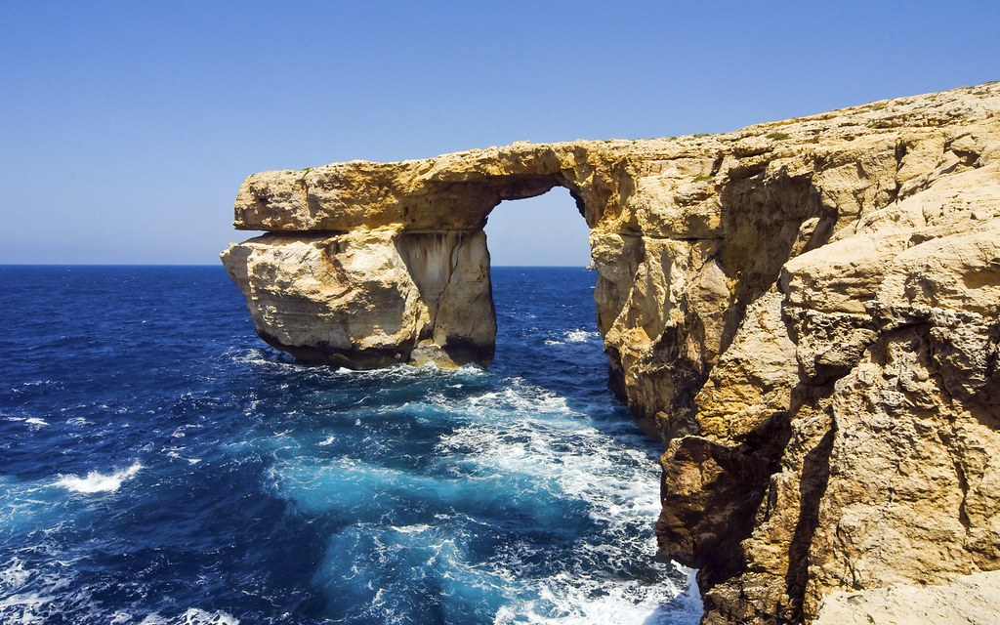

Merħba fil-websajt!
<<<<<<< HEAD

=======
Blue Groto
Main Categories:
Miscellaneous:
A spiritual succesor to Grazio Falzon's aboutmalta.com
This website contains original articles and web resources, pertaining to the Maltese Archipeligo.
Main Categories:Miscellaneous: |
A spiritual succesor to Grazio Falzon's aboutmalta.com This website contains original articles and web resources, pertaining to the Maltese Archipeligo. You can contribute to the website by: 
|
 Submitting code via the
Submitting code via the  Or Contacting us via email at:
Or Contacting us via email at: Developed and maintained by Julian, Zachary, and other wonderful contributors.
>>>>>>> 8ec5160594234c600d3c0e48e3b12d2a3e0a59dc